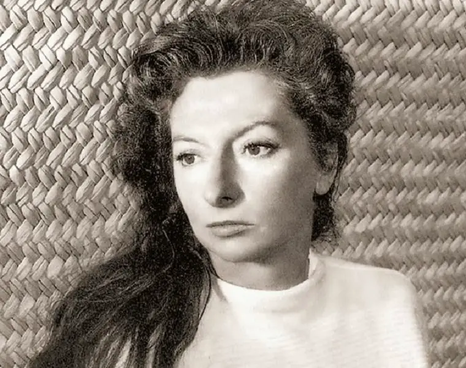

Remedios Varo
Remedios Varo (1908-1963) fue una pintora surrealista española-mexicana conocida por su estilo onírico, místico y cargado de simbolismo.
Su obra combina elementos de la alquimia, la ciencia, la magia y la espiritualidad, creando mundos fantásticos llenos de personajes enigmáticos y escenarios detallados.
Su estilo detallado y su imaginario único la han convertido en una de las figuras más importantes del arte surrealista y en una referencia clave dentro del arte en México.
